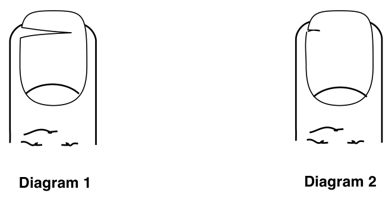

Background
The previous chapter dealt with hafifah; the wife’s preparation for immersion. This chapter deals with intervening substances found on the body or hair after immersion.
A substance is considered to be intervening, from the Torah’s standpoint, when it covers the majority of the body1Even if it doesn’t cover the majority of the body in one place, but rather its combined surface areas does. See Mehaber 198:5. The hair is viewed as an independent body when considering if a substance covers its majority. Some say this refers to each hairy area. Some say this rule refers only to the hair on the head. and the woman is particular2Even if other women are not particular, Beis Yosef 198, Tur, Taz and Shach 198:2. Or most women are particular, even if she is not, Mehaber 198:1. in not allowing such a substance to remain on her body.
The Talmudic Rabbis3Eruvim 4:b, Sukkah 6:b. ruled that a substance on the body invalidates the immersion, even if it fulfills only one of these conditions4Even after the fact, Bodei Hashulchan 198:5.. This stringency was designed to act as a fence guarding against immersion when both conditions are present.
Subsequently, it was ruled5Ramo 188:1. This is considered a latter stringency, not of the Talmudic era, Sidrei Tahara 198:1. that all items should be removed before immersion, even if they are very small, loose fitting, and one is not particular about their presence6Ramo 188:1.. These, however, do not invalidate the immersion after the fact. Furthermore, when their removal is impossible, very painful, or particularly complicated, immersion is nonetheless permitted7Bodei Hashulchan 198:15. In consultation with an orthodox Rabbi expert in these laws., in consultation with an orthodox Rabbi expert in these laws.
It is of great importance that the woman wash and examine her body thoroughly before immersing in the to ensure that there are no intervening substances.
Note that no intervening substance (hatzitza) whatsoever should be allowed, and this is the purpose of the preparation for the immersion (see Chapter Seven).
Therefore, situations described on the following pages where we note that immersion is not invalidated, refer to those discovered after the fact, i.e. after immersion.
In the following pages we will delineate situations and substances which constitute a problem of hatzitza.
Hair
Knots. Two hairs which remained knotted, whether together or to two separate hairs8Mehaber and Ramo 198:5. Since there are two hairs, the knot cannot be too tight as to stop water from entering. do not invalidate the immersion.
One knotted hair, whether around itself or another hair invalidates the immersion, if she is usually particular in ensuring that not even one hair remains knotted9Mehaber 198:5..
However, if she is not normally so cautious, this one knotted hair does not invalidate her immersion. In other words, the law depends on her personal fastidiousness, even if most others aren’t particular about one knotted hair, if she is, it invalidates the immersion10Mehaber 198:5, Darchei Teshuva 198:19..
Perspiration causing most of the hair on her head or under her armpits to cling together invalidates the immersion11Mehaber 198:6, according to Sidrei Tahara this refers to a case where it is not the majority. Poskim.. Less than half does not invalidate the immersion, unless she is particular about this. Perspiration causing even less than half of her pubic hair to cling together invalidates her immersion12Mehaber 198:6, Taz 198:10. “Less than half,” Tahara Kehalacha 20:15..
Lice. As explained in the previous chapter, a woman should do whatever possible to remove lice or lice eggs from her scalp and hair including combing with a fine comb designed for this purpose, rinsing with hot water and pulling them out with her fingernails13Mehaber 198:47..
If she was negligent and did not try to remove them, her immersion is invalid14Shach 198:58. Shiurei Shevet HaLevy on Mehaber 198:47..
Hair Dyes. Hair dye which is absorbed into the hair shaft does not invalidate the immersion15Mehaber 198:17, Shiurei Shevet HaLevy and Darchei Tahara. Two reasons: the dye doesn’t have a substance, rather only a color and she isn’t particular about its being there; to the contrary, she wants it there, Beis Yosef, Bodei Hashulchan 198:118. See Shach 198:21. Some poskim require its removal. Each woman should clarify her community’s custom..
However, if the dye has already been ruined to the degree that it is undesirable or will become ruined and undesirable because of the hafifah, it constitutes an intervening substance and invalidates the immersion16Poskim..
Ideally, she should either completely remove it or redye it. If the time of immersion has arrived and this is not possible or involves tremendous difficulty, she is permitted to immerse17Tahara Kehalacha 19:47..
Cutting. The hair, when clean and unknotted, does not adversely affect immersion18On condition that it is completely immersed. and therefore she should not accustom herself to cutting it in preparation for immersion19Shiurei Shevet HaLevy on Ramo 198:20., which may cause it to be viewed as an intervening substance for her.
If she did accustom herself, however, she should indeed attempt to cut it20Shiurei Shevet HaLevy on Ramo 198:20. Ideally she should not have a haircut the three days prior to immersing, as explained in Chapter Seven. and is permitted even during chol hamoed, the day before the last Yom Tov in preparation for immersion on motzei Yom Tov, sefiros haomer and the week in which Tisha BeAv falls21Tahara Kehalacha 19:83 see note 233, Shiurei Shevet HaLevy on Mehaber 198:20..
If, however, she cannot get her hair cut, she nonetheless immerses at the proper time22Shiurei Shevet HaLevy on Mehaber 198:20. Igros Moshe Yoreh Deah (2) section 80. Bodei Hashulchan 198:148..
Skin
Bandages as well as medicinal creams invalidate the immersion23Mehaber 198:10.. If a bandage cannot be removed, an orthodox Rabbi expert in these laws should be consulted.
If she rubbed her hands together to remove dough, mud, or clay, yet strands remained when she immersed, this invalidates the immersion24Mehaber 198:13, Taz 198:16, Shach 198:18..
If she immersed with flakes or peeling of skin, caused by extended sitting in the bathtub, her immersion is valid25Darchei Teshuva 198:50..
Cuts. Dry blood on a cut invalidates the immersion26Mehaber 198:9.. Moist blood27Mehaber 198:15. or pus28Mehaber 198:9. in the cut does not invalidate the immersion. If, however, they extend outside the cut they invalidate the immersion29Poskim..
Splinters. A splinter completely below the skin level, even if it can been seen, does not invalidate the immersion30Mehaber 198:11, Shach 198:16.. If it extends outside of the skin it invalidates the immersion31Shach 198:16, Bodei Hashulchan 198:92, Tahara Kehalacha 20:110..
Stains. Dry paint32Mehaber 198:15., as well as other stains which have substance33Taz 198:17, Shach 198:21., invalidate the immersion34Mehaber 198:15.. However, if she removed as much as possible and all that remains is a trace, this does not invalidate the immersion35Poskim. See Bodei Hashulchan 198:109..
Eyes
Mucous around the eye, whether moist or dry, invalidates the immersion. Mucous in the eye: if moist—does not invalidate the immersion; if dry—does36Mehaber 198:7.. It is considered dry when it begins turning yellow37Tahara Kehalacha 20:23. or green38Mehaber 198:7.. If the night has passed, she cannot return to immerse again, or they have had marital relations, the immersion is valid39Shach 198:13. Darchei Teshuva 198:30. This leniency refers only to mucous in the eye..
It is best not to use false eyelashes40Due to halachic discussion whether they are intervening substances.. If she uses them, however, she is permitted to immerse, provided they are complete41Igros Moshe Yoreh Deah (2) section 62. I.e. they have not begun to peel off..
Contact lenses are to be removed42As explained in Chapter Seven. before immersion. If she immersed without removing them, and they are the type which are removed regularly, especially if she removes them before retiring nightly 43Darchei Tahara Chapter 16. she should remove them and immerse again44Shiurei Shevet HaLevy on Mehaber 198:7.. If this reimmersion causes great difficulty and she normally does not remove these while showering, she need not immerse again45Darchei Tahara Chapter 16. Gefen Porioh 5:8.. If she normally removes them while showering or sleeping, she must immerse again46Tahara Kehalacha 20:29. Darchei Tahara Chapter 16..
If they are the type which remain in place for long periods of time, even while washing, her immersion is valid47Igros Moshe Yoreh Deah (1) section 104. Gefen Porioh 5:8..
If she did not remove an artificial eye she need not immerse again48Shiurei Shevet HaLevy on Mehaber 198:7..
Nails
Trimming. Even if one fingernail49Or part of it, Shach 198:27. remained uncut when she immersed in the mikveh she must cut it and immerse again50Ramo 198:20. Shach 198:27., even if there was no dirt under it. If the nail was trimmed until the end of the finger, she needn’t immerse again51Bodei Hashulchan 198:147 and 198:150., as long as it is clean.
If, however, she discovered it only after having marital relations52Taz 198:21., the night passed and for some reason she hadn’t completed marital relations53Ma’haram me’lublin brought in Shach 198:25, poskim., or she can’t immerse again (for example if the mikveh is closed) even if the evening hasn’t passed54“Having marital relations is sufficient to retroactively validate her immersion, so too is the fact that she isn’t able to immerse again,” Bodei Hashulchan Tziyonim 198:280., the immersion is valid.
All of the above is on condition that the fingernail(s) was cleaned before the immersion55Tahara Kehalacha 20:67..
Dirt Under the Fingernails. Dirt discovered below the part of the fingernail which extends beyond the finger invalidates the immersion, since most women are particular about this56Mishnah Beruroh 161:3. Mehaber 198:18.. However, if it is such a small amount that most women57And she is also not particular. aren’t particular about it, then it does not invalidate the immersion58Taz 198:18..
On Friday night, or Yom Tov, if she didn’t cut a fingernail(s) during hafifah the day before, she should ask a non-Jewess to cut it with her59I.e., the non-Jewess’ fingernails. fingernails60Or bite it., if possible. If this is not possible, she can ask her to do so with a scissors or clipper61Bodei Hashulchan 198:152.. Regarding a toenail, however, she need not have it trimmed, rather suffices by cleaning beneath it62Bodei Hashulchan 198:152..
Dirt found under the part of the nail which does not extend beyond the finger does not invalidate the immersion, since most women are not so particular about this63Mehaber 198:18.. However, if she is particular, then it constitutes an intervening substance for her and invalidates the immersion64Bodei Hashulchan 198:129..
Dough65Mehaber 198:18. or excrement66Mishnah Beruroh 161:2, Bodei Hashulchan 198:125. found under any part of the fingernail, even that part which does not extend beyond the finger, invalidates the immersion.
Partially Torn Fingernails. A fingernail partially torn across its width, whether torn more than half 67Shach 198:27, Sidrei Tahara 198:41, Bodei Hashulchan 198:159.(Diagram 1), or less than half 68Mehaber 198:21.(Diagram 2), invalidates the immersion.

In either case she should remove the part remaining and immerse again, unless they already had marital relations, the night has passed or it would be extremely difficult to immerse again69Torn more than half, Bodei Hashulchan 198:159, 198:146; and, when torn less than half, Bodei Hashulchan 198:156..
A woman who insists on leaving her manicured nails long or her artificial nails on is, nonetheless, permitted to immerse, particularly if requiring their removal will cause her to avoid using the mikveh70Tahara Kehalacha 19:44.. Ideally, though, all nails are to be trimmed, as explained in Chapter Seven.
If she did not remove nail polish, which was complete, her immersion is nonetheless valid71Mehaber 198:17..
Toenails. If a woman forgot to cut her toenails before immersing in the mikveh, it is best to cut them and to immerse again as described above72Shach 198:25, Bodei Hashulchan 198:149..
However, if she didn’t immerse again and if a lot of effort would be required to do this, one can allow her immersion, even if another immersion is possible73Pischei Teshuva 198:10..
In the event of an ingrown toenail, when the doctors prescribed lifting it by putting cotton under it to allow it to grow out properly, a woman should remove the cotton before immersion in the mikveh. Such a nail need not be cut74Tahara Kehalacha 20:74..
Dirt found under the part of the toenail which does not extend beyond the toe does not invalidate the immersion, unless she is particular about this75Bodei Hashulchan 198:130..
Concealed Parts of the Body
The verse “And he shall immerse his entire body in the water76Leviticus 15:9.” indicates that only the external part of the body, the skin must come into contact with the mikveh’s waters, not the enclosed or hidden parts such as the mouth, nose and private place77Kiddushin 25:a.. Although not requiring actual contact, they must nevertheless be clean of intervening substances and fit to come into contact with the water78Niddah 66:b..
One explanation traces this back to the seemingly superfluous word “entire” in the verse “and he shall immerse his entire body in the mikveh’s waters.” Another explanation traces it to rabbinic legislation seeking to diminish differentiation between the external (skin) and internal parts of the body, the reason being that one might think that just as the hidden parts of the body (like the teeth) needn’t be clean of intervening substances, so too the revealed parts of the body79Both explained at length in Bodei Hashulchan 198:176, see sources in Tziyonim..
An I.U.D.80Only when permitted through consultation with an orthodox Rabbi expert in these laws. does not negatively affect immersion in the mikveh.
Teeth. If in spite of the requirement to clean and check the teeth, as explained in Chapter Seven, a woman failed to do so, yet found them free from intervening substances after immersion, she need not repeat the immersion81Mehaber 198:25..
Finding some substance stuck to or wedged between the teeth, for example, a bone splinter, meat, or tomato peel, invalidates her immersion82Mehaber 198:24. Shach 198:33.. Finding a small substance such as a piece of meat in the mouth, not attached or wedged between the teeth, does not invalidate the immersion83“Free-floating coins in the mouth do not, after the fact, invalidate the immersion, since the entrance of water is not inhibited,” Darchei Teshuva 198:74 in the name of the Tur..
Permanent tooth fillings84Even if a bit juts out, but not enough that she goes to repair it, Shiurei Shevet HaLevy on 198:24., even in all her teeth85Bodei Hashulchan 198:179. Shut Tzemach Tzedek section 160, poskim., permanent crowns86Shiurei Shevet HaLevy on 198:24, poskim., and permanent artificial teeth87Shut Tzemach Tzedek 160, poskim. do not invalidate the immersion. Regarding temporary fillings or crowns, an orthodox Rabbi expert in these laws should be consulted88Some poskim place its permissibility in doubt, Bodei Hashulchan beginning of 198:179. Some poskim require its remaining for at least thirty days following immersion (Bodei Hashulchan 198:179) or from its placement, Shiurei Shevet HaLevy on Mehaber 198:24 according to Tahara Kehalacha 20:42. Others suffice with its remaining seven days, especially in extremely inconvenient circumstances, Shiurei Shevet HaLevy on Mehaber 198:24, see Tahara Kehalacha 20:42 note 149. Yet others mention no minimum time, Igros Moshe Yoreh Deah (1) section 97, Darchei Tahara Chapter 16. The halachic guidelines surrounding temporary crowns are the same as the above, Bodei Hashulchan 198:179, Tahara Kehalacha 20:44..
She must take out removable artificial teeth. Failing to do so requires removal and immersion again89Bodei Hashulchan 198:179.. If the night has passed, they had marital relations or immersing again involves great difficulty, her immersion is valid90Tahara Kehalacha 20:57..
Regarding other situations of teeth in need of undergoing dental treatment, an orthodox Rabbi expert in these laws should be consulted.
Nose. Although it is best to clean the nose as much as possible, nonetheless dirt remaining concealed deep inside does not invalidate the immersion91Shach 198:55, Bodei Hashulchan 198:331.. Since most people are particular about it, dirt remaining near the entrance of the nose does invalidate the immersion92Bodei Hashulchan 198:331..
Ears. Dirt found cleaving to the external part of the ear invalidates the immersion. Dirt found in the ear canal does not invalidate the immersion. However, if repeating the immersion after the dirt has been removed can be achieved with little effort, it is best to do so93See Bodei Hashulchan on Mehaber 198:43 in Beorim..
If, following immersion, she discovered she had not removed a loose earring94Or nose ring, Darchei Teshuva 198:69, 71. or other loose jewelry such as a bracelet95Mehaber 198:23., ankle bracelet96Bodei Hashulchan 198:166., or necklace97Mehaber 198:23., her immersion is valid.
If she wore a very tight ring during immersion and already had marital relations, the immersion is valid. This refers to a woman who is not careful to remove it while kneading dough or other activities98Darchei Teshuva 198:70..